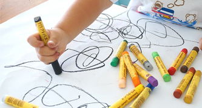
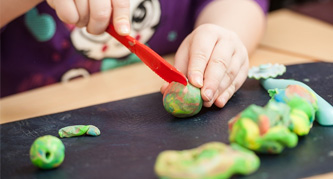
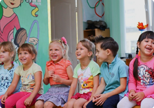
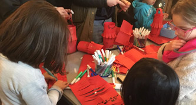

-
精選優質課程體系
打造專業學習環境 -
種子班

適合對華語文有興趣的孩子，在家長的陪同下，於沈浸式的環境中學習，培養孩子對華語文的興趣。
建議年齡：1歲以上
-
培育班

透過兒歌、童謠以及故事，培養孩子對於中文的熟悉度，並且從問候、打招呼等基本的詞語，建立孩子的中文能力。
建議年齡：3歲以上
-
萌芽班

透過活潑生動的教學方式，循序漸進地鼓勵孩子使用中文回應，理解簡單的中文對話，辨別日常生活中常用的詞匯。
建議年齡：5歲以上
-
成長班
適合接觸過華語文學習、並且想持續增進中文能力的孩子，例如使用中文回答問題，敘說自己感興趣的話題，閱讀與書寫簡單的字句。
建議年齡：8歲以上
-
茁壯班

適合擁有進階華語文程度或華語文母語者的孩子，茁壯班將訓練孩子以流利且自信的口語進行對話，理解具體或抽象的話題，閱讀短篇文本，撰寫簡短的書信、日記等。
建議年齡：8歲以上
精選主題
Themes- Fantastic Fun and Learning
以豐富多元的精選主題為課程構架，從兒童的生活經驗為出發點，設計活潑有趣的課程內容及貼近兒童學習能力指標的活動。透過兒歌童謠、說故事及律動等富有教育意義的活動，帶領著孩子們一同成長，培養孩子們對於中文學習的興趣。
-

基本認知
-

認識自我
-

我的家庭
-

校園生活
-

認識社區
-

社會職業
-

認識動物
-
愛護環境
-

健康與食物
-

節慶與特殊節日
中華文化課程與體驗活動
Chinese Cultural Activities and Events
-
開放日
Mandarin Go Open Day

日期：3 月 23 日，星期六
時間：10:30-11:30
地點：Hampstead Community Centre
地址：78 Hampstead High St, Hampstead, London NW3 1RE -
中國傳統新年活動
Traditional Chinese New Year
日期：2 月 3 日，星期六
時間：11:00-16:00
地點：Burgh House & Hampstead Museum
地址：New End Square, Hampstead, London NW3 1LT -
熊熊著色比賽
The Best Bear Colouring Competition
活動辦法：下載表單，完成作品，填妥報名資訊，將作品拍照或掃描，傳至 Mandarin Go 粉絲頁或 Email（MandarinGOUK@hotmail.com）
-
兒童中文課程體驗工作坊
Chinese Culture Workshop for Children

日期：4 月 26 日，5 月 24 日，6 月 28 日，星期五
時間：16:00 - 17:00
地點：Burgh House & Hampstead Museum
地址：New End Square, Hampstead, London NW3 1LT
報名方法：名額有限,請盡早詢問報名。 -
民俗童玩體驗活動
Traditional Chinese Folk Activities and Toys

Mandarin Go 提供各種傳統中華民俗童玩以及遊戲的體驗活動，邀請家長及孩子們一同來參與體驗，詳情請詢問，謝謝。
-
快樂學中文假期營隊
Fun Learn Chinese Holiday Camp

時間：9:30-12:30 或 9:30 - 15:30
備註：Mandarin Go 提供延後接送孩子的付費服務，詳情請詢問，謝謝。